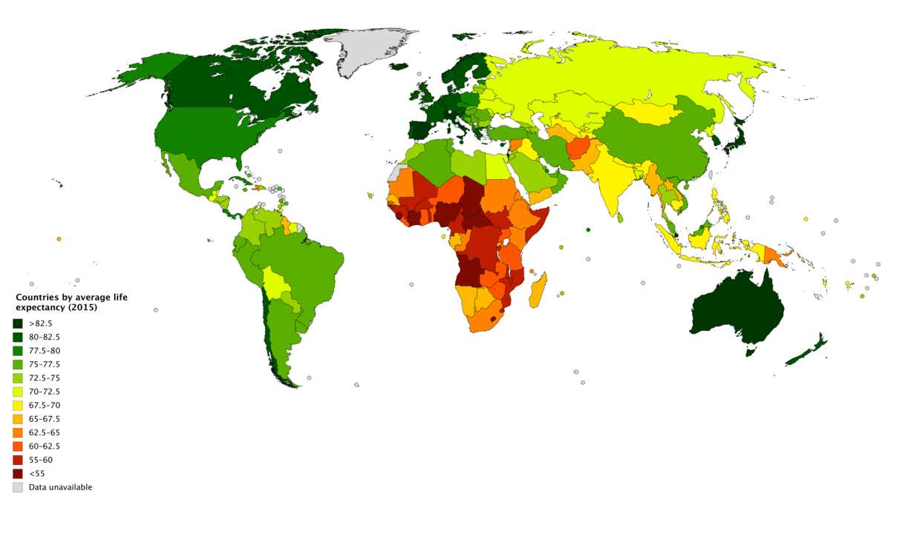

class: center, middle, main-title # Software Engineering Version control systems, UML deployment diagram, technology choices --- ## Now - Version control systems - Software design - UML deployment diagram - Technology choices ??? Promo for lecture on team performance --- class: middle, center ## Version control systems --- ## The need > SE = "Multi-person construction of multi-version software." -- Notice some challenges... -- - Multi-person - Who has the latest version of file X? - Can I edit file X today? - What changed yesterday? -- - Multi-version - What changed between version 1.0 and 1.2? - Who wrote this!?! - Is there a reason why it is like it is? --- ## There's a tool for that **Version control systems** - software tools that help manage changes to source code over time. -- Some benefits: - Records a full history of all changes to all files - Accelerates software development - Becomes the single source of truth --- ## Key concepts - Diff ??? Diff = Comparison between two versions -- - Commit ??? Commit = A change set that is made permanent -- - History -- - Tag -- - Branch ??? Branch - some particular (named) track of history -- - Code review ??? Review tools: - https://demo.reviewboard.org/r/ - https://github.com/SolarDesignTool/math-applications/pull/77/files -- - Merge ??? Merge = Inclusion of changes from one branch into another --- ## Learn more about it - [Overview of terms, comparison between distributed and centralized VCS](https://www.mi.fu-berlin.de/inf/groups/ag-tech/teaching/2008-09_WS/S_19565_Proseminar_Technische_Informatik/otte09version.pdf) - [Git tutorial from Atlassian](https://www.atlassian.com/git/tutorials/what-is-version-control) - Any other resources - Please share what you find! --- ## Recommended practices - Version everything -- - Text-based formats are superior -- - Avoid storing derived/compiled resources ??? Example: these slides @ https://git.mif.vu.lt/grimsa/site -- - Atomic commits -- - Informative commit messages ??? Example: https://github.com/SolarDesignTool/math-applications/pull/77/files -- - Define your workflow - [GitHub flow](https://guides.github.com/introduction/flow/) - GitFlow (see [here](https://nvie.com/posts/a-successful-git-branching-model/) or [here](https://www.atlassian.com/git/tutorials/comparing-workflows/gitflow-workflow)) ??? Start using VCS in your group projects --- ## State of the practice - Every non-throwaway project uses VCS -- - Dominant VCS - git - Others: SVN, Mercurial, CVS, Jazz, etc. ??? Random post on the internet: ~70% market share in 2020 -- - Dominant git repository hosting: - [GitHub](https://github.com) - [GitLab (public)](https://gitlab.com) - [GitLab (VU)](https://git.mif.vu.lt) --- ## VCS in practice (Demo) ??? - Early history of `sdtmain` project - Recent history of `permit-ready` service - Archeology: - https://github.com/qos-ch/logback/blob/master/logback-access/src/main/java/ch/qos/logback/access/spi/AccessEvent.java - Search Image suppressed - Blame twice, click on commit - End up here: https://github.com/qos-ch/logback/commit/69290e182f8db6589eadd5a3c485a37255384893 - Archeology - size of codebase: IDEA search for "\n" regex - Post about it: https://www.se-radio.net/2009/11/episode-148-software-archaeology-with-dave-thomas/ - Code reviews: - https://github.com/SolarDesignTool/math-applications/pull/77/files --- class: middle, center ## High-level design --- ## The basic problem: how? <br> .center[Requirements] .center[↓] .center[????] .center[↓] .center[Code] --- ## It depends - Small and simple problems - Solved with little attention to design -- - Big and difficult problems - Design largely determines how complex software can become --- ## Design > 1. [**process**] to define the architecture, system elements, interfaces, and other characteristics of a system or system element. > 2. **Result** of the process in (1). > <br><br>— <cite>Systems and software engineering - Vocabulary, ISO 24765:2017</cite> --- ## Why is design essential for system's success? - Code is only limited by what people can imagine -- - However, [human mind is very limited](https://javadevguy.wordpress.com/2017/11/02/transcending-the-limitations-of-the-human-mind/) ??? How big a codebase can one developer know deeply. 100k LoC? --- ## Models to the rescue > A model **represents some aspect of reality** or an idea that is of interest. > A model is a **simplification**. > It is an interpretation of reality that **abstracts** the aspects > relevant to solving the problem at hand and **ignores extraneous detail**. > <br><br>— <cite>Eric Evans, [Domain-Driven Design](https://www.goodreads.com/book/show/179133.Domain_Driven_Design), 2003</cite> ??? A model is an abstraction. Paralell with memory of some event - "what did you do on the day of your last birthday"? You only remember key details. --- ## Model of average life expectancy  <div style="font-size: medium; text-align: center">© MapChart.net under the Creative Commons Attribution-ShareAlike 4.0 International License</div> ??? Source: https://commons.wikimedia.org/wiki/File:Countries_by_average_life_expectancy_(2015).png --- ## More on models - A model is merely a human construct to help us better understand the real world -- - We can model what was, what is, and **what could be** --- ## More on design - Design is about defining (modelling) a system or system element so that it: - achieves the goals - satisfies constraints - has other desired qualities -- - Design can be done at different levels - With different goals ??? Design a building, design a lecture hall, design a door handle, design a screw -- - There are always multiple alternative viable designs -- - The goal is to choose the best one - Analogy with planning - selecting the best possible future --- ## What does design help with? - Mitigating risks -- - Communicating, discussing, and validating ideas -- - Decomposing and delegating work -- - Construction ??? For group projects drawing a deployment diagram can achieve 1-2, and possibly even 3 --- ## How to communicate design? - In a free form - Diagrams and drawings - Text - Tables -- - Using standard notation - **[Unified Modelling Language (UML)](https://en.wikipedia.org/wiki/Unified_Modeling_Language)** - [The C4 model](https://c4model.com/) ??? We will only be looking at UML in this course, and only at a subset of diagrams. --- ## UML deployment diagram - Static structure of the system at a very high level -- - Models physical nodes and what artifacts are deployed on them -- - A few examples: - [Clustered webapp](https://www.uml-diagrams.org/web-application-clusters-uml-deployment-diagram-example.html?context=depl-examples) - [Small system](https://en.wikipedia.org/wiki/Deployment_diagram#/media/File:Deployment_Diagram.PNG) - [Clustered webapp](https://sites.google.com/site/kampaaniad2016/3-projekt/3-6-uml-deployment-diagram) - [Android app](https://www.researchgate.net/figure/The-Deployment-Diagram-for-the-BBS-Android-application_fig6_323704711) ??? - Also show examples from last year --- ## Tips for choosing technologies > The best framework is the one you already know. > <br><br>— <cite>Folklore</cite> -- <br> > Choose boring technology. > <br><br>— <cite>Dan McKinley ([blog post](https://mcfunley.com/choose-boring-technology), [slide deck](http://boringtechnology.club/))</cite> -- Leverage free hosted services ??? - VU resources - Netlify - AWS - https://jsonbin.io/ - etc. --- ## Key takeaways - Version control systems - what they are, and what practices are universally recommended -- - What are models -- - What is design (both as an activity and as a thing) and why do we need it -- - How UML deployment diagrams can be used to describe the mapping of artifacts to nodes --- ## Reading assignment Mandatory: - GitFlow workflow ([blog post](https://nvie.com/posts/a-successful-git-branching-model/) or [tutorial](https://www.atlassian.com/git/tutorials/comparing-workflows/gitflow-workflow)) - [Blog post: Transcending limitations of the human mind](https://javadevguy.wordpress.com/2017/11/02/transcending-the-limitations-of-the-human-mind/) Recommended: - [Talk: Pragmatic architecture](https://www.youtube.com/watch?v=jNgZtM6SQmE) ??? We did not talk much about architecture, but you could try out architect's role while doing high-level design --- class: middle, center # Questions?